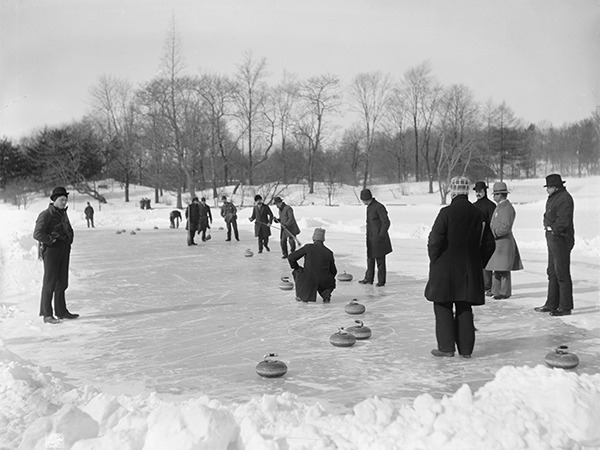

What is Curling?
Curling is a sport where two teams take turns sliding granite stones across a sheet of ice at a target called the House. Players curl the stone by slowly rotating as it slides. Two teammates have brooms or brushes which they can sweep to decrease friction and cause the stone to travel longer and in a less curved path.
Most curling teams have four players and eight stones per team, usually with red and yellow handles. Each players throw two stones per end (round), alternating with their opponent. Once all sixteen stones are thrown, points are scored for each stone closer to the center of the house than the other team's stone. Games are usually eight or ten ends long
History of Curling
Evidence of curling dates back to the early 16th century in Scotland. The world's oldest curling stone is located at the Smith Art Gallery and Museum in central Scotland. Scottish emigrants introduced the sport to Canada and the United States in the 19th century.

What equipment is needed?
Curling requires specialized equipment to play. Official curling stones weight between 38 and 44 pounds and are made from a special granite that comes from a small Scottish island. It can be expensive, but most curling clubs have equipment to rent or borrow.
Recommended equipment
- Curling Stones
- Brooms
- Curling shoes or slider attachment
- Stopwatch(option)